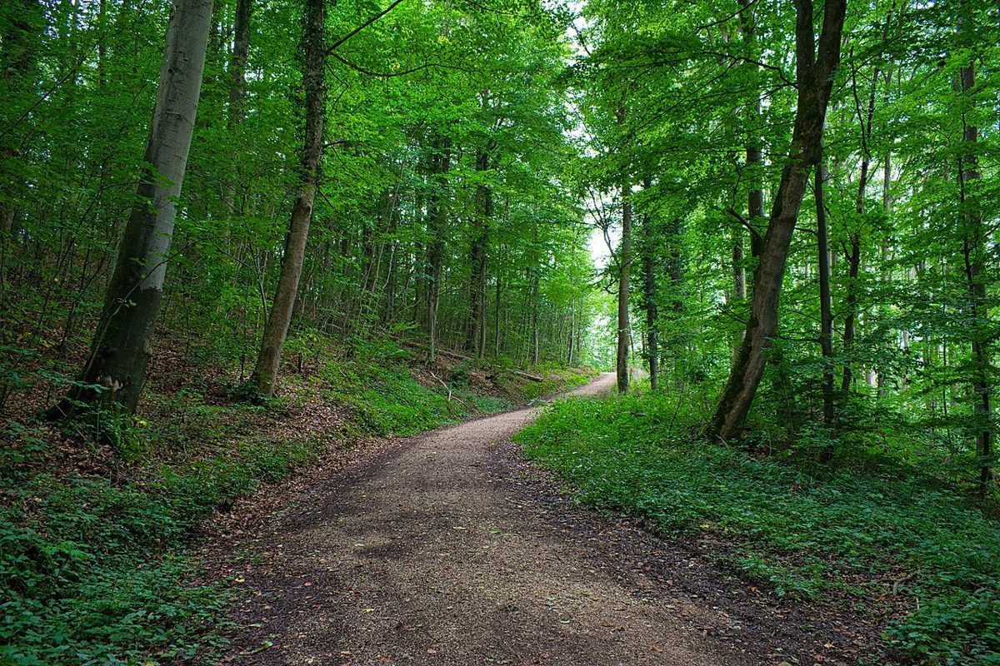
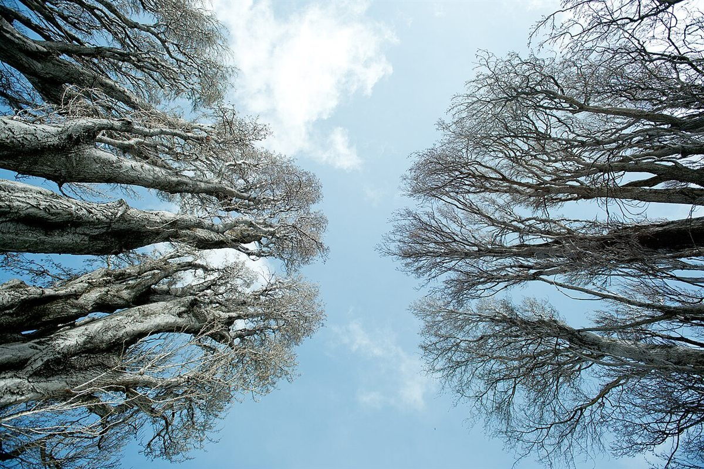

カフェ / 愛知県岡崎市
CAFE detree
愛知県岡崎市中島町にあるカフェ「CAFE de tree」のご案内ページです。営業時間やメニューなど、詳しいことは準備中。まずはInstagramをのぞいてみてください。

制作側の連想
「tree」から、樹形図を思い浮かべた
店名の由来は分かりません。制作側は「tree」という言葉から、一本の幹が枝分かれしていく「樹形図」を連想しました。そこでこのページは、「知りたいこと」を選ぶたびに道が分かれていく樹形図の作りにしています。お店の理念・由来とは無関係の、制作側の連想です。
樹形図でたどる
知りたいことを、枝で選ぶ。
CAFE de tree
- お店のことを知りたい
- 行く前に確かめたい
- もっと見てみたい
四つの枝先(イメージ)
枝の先には、こんな景色。
写真は岡崎市の風景ではありません。「tree」の連想で選んだ、国外・撮影地不明のフリー素材です。



ご案内
お店のこと(確認できたものだけ)
| 所在地 | 〒444-0226 愛知県岡崎市中島町鮫田26-1 |
|---|---|
| 電話 | なし |
| 営業時間 | 準備中 |
| 定休日 | 準備中 |
| ご予約 | 準備中 |
| 駐車場 | 準備中 |
| SNS | Instagram @cafe_de_tree_nakajima |